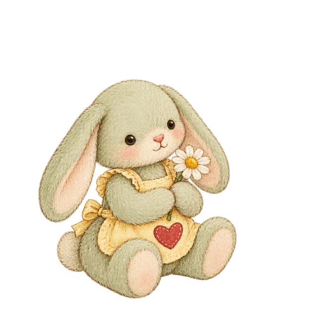
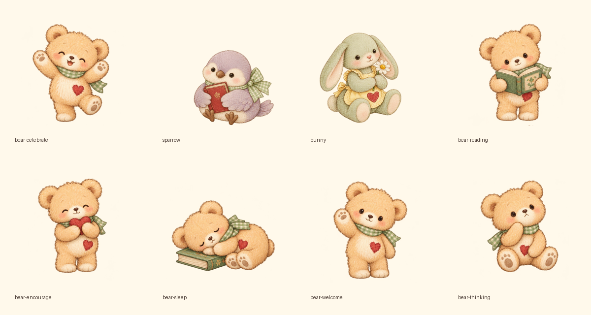

「走るのが速い」「話し方が分かりやすい」のように、動作の様子を表します。
彼女は走るのが速いです。
彼女は走るのが速いです。
「跑」の後ろに「得很快」を置いて、走る動作が速いことを説明します。
| 她 / tā | 代名詞 | 彼女 |
| 跑 / pǎo | 動詞 | 走る |
| 得 / de | 助詞 | 様子・程度をつなぐ |
| 很 / hěn | 副詞 | とても |
| 快 / kuài | 形容詞 | 速い |
得：動作の様子・程度

7画面は静的な設計見本です。実装時には全てのボタン・ナビ・ブロック操作を実際に機能させてください。
